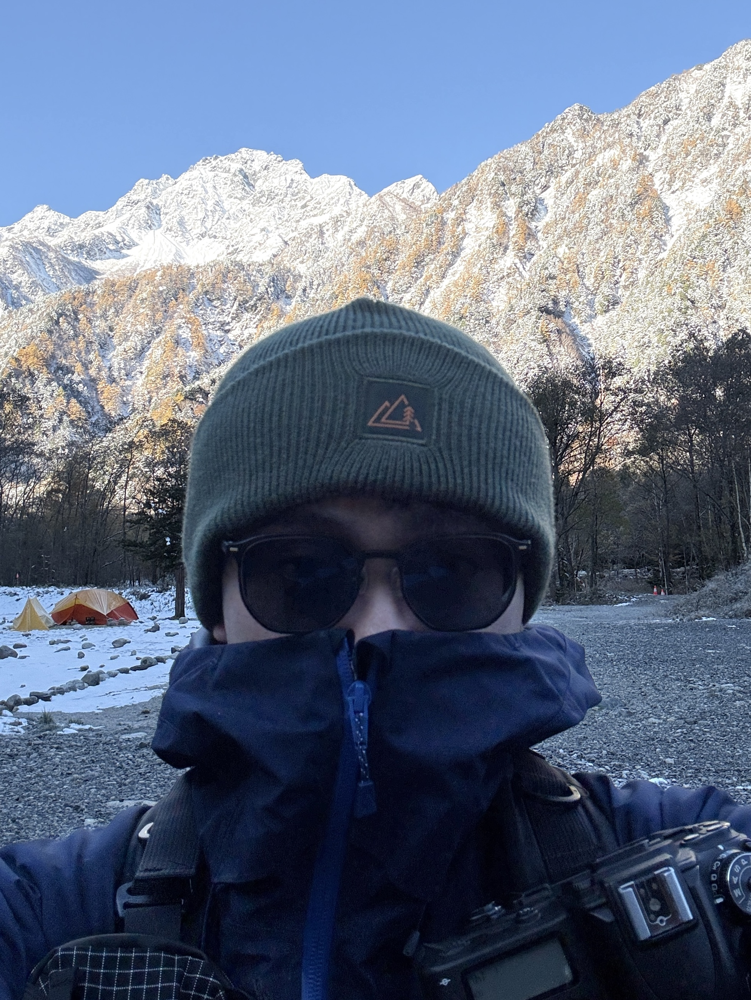

Curated by Jimmy
那些被留在平面上的
Moments
單面模式｜點照片右半往後、左半往前。
雙面模式｜模擬書本翻頁，可以直接按住書頁拖曳。
※兩種模式都支援鍵盤方向鍵，上方選單可切換書冊。
Where I've Been

謝謝你點進來！
我喜歡拍照，也喜歡出去玩，這裡是我的秘密基地。
累了就來這裡休息一下，回味自己走過的地方。
最近喜歡攀岩！
點照片可放大細節・點空白處或按 Esc 關閉